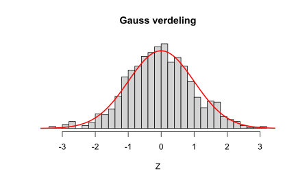
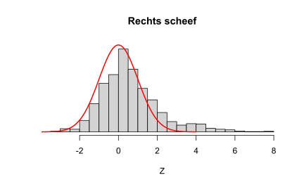
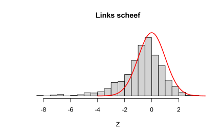
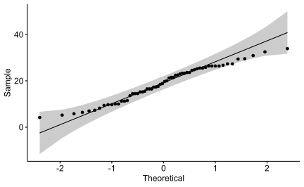
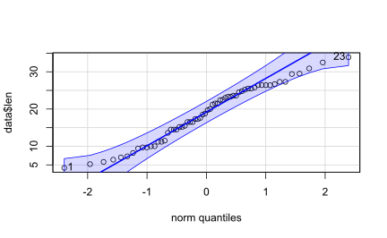

# Maak een reeks van 1000 gelijk verdeelde getallen tussen -4 en 4 x <-seq(-4, 4, length=1000)# Maak een vector van waarden die de hoogte van de kansverdeling geeft voor elke waarde in xset.seed((1234))y <-dnorm(x)# Maak een spreidingsdiagram, verbind de punten via een lijn (type = "l")# maak aangepaste labels voor de X-asplot(x, y, type ="l", lwd =2, axes =FALSE, xlab ="", ylab ="")axis(1, at =-3:3, labels =c("-3sd", "-2sd", "-1sd", "gemid", "1sd", "2sd", "3sd"))
#define population mean and standard deviationpop_gemid<-50# gemiddelde populatiepop_sd <-5# standaarddeviatie populatie# Maak een reeks van 1000 x-waardenx <-seq(-4, 4, length =1000) * pop_sd + pop_gemid# Maak een vector van waarden voor de kansdichtheidsfunctiey <-dnorm(x, pop_gemid, pop_sd)# Teken grafiek met aangepaste X-as labelsplot(x,y, type ="l", lwd =2, axes =FALSE, xlab ="", ylab ="")sd_axis_bounds =5axis_bounds <-seq(-sd_axis_bounds * pop_sd + pop_gemid, sd_axis_bounds * pop_sd + pop_gemid,by = pop_sd)axis(side =1, at = axis_bounds, pos =0)abline(v= pop_gemid)
myhist<-function(x, ...){hist(x, breaks =30, xlab ="Z", ylab ="", yaxt='n', freq =FALSE, ...)lines(x = zs, y = nd, type ="l", col ="red", lwd =2)}
set.seed(1234)gaussverdeling <-rnorm(1000)myhist(gaussverdeling, main ="Gauss verdeling")

De rode curve toont de Gauss-verdeling, terwijl het histogram de verdeling toont van 1000 willekeurige gegenereerde getallen tussen -4 en 4. Zoals je kunt zien, komt de bovenkant van de balken in het histogram mooi overeen met de Gauss-verdeling. Als onze dataset perfect normaal verdeeld zou zijn, zou het midden van de bovenkant van elke balk op de rode curve vallen.
rechts scheef
# scheef_recht is de dataset die vergeleken wordt met de Gauss verdelingscheef_rechts <-c(gaussverdeling[gaussverdeling >0] *2.5, gaussverdeling)myhist(scheef_rechts, main ="Rechts scheef", ylim =c(0, max(nd)))

Bij “rechts scheef”, wat betekent worden de meeste gegevens verdeeld met een lange “staart” van gegevens die zich naar rechts uitstrekt.
links scheef
Bij “links scheef” strekt de staart zich naar links uit.
# scheef_links is de dataset die vergeleken wordt met de Gauss verdelingscheef_links <-c(gaussverdeling[gaussverdeling <0] *2.5, gaussverdeling)myhist(scheef_links, main ="Links scheef", ylim =c(0, max(nd)))

De twee histogrammen zijn bijna spiegelbeelden van elkaar (over de Y-as).
Test for Normal Distribution in R, Many statistical tests, such as correlation, regression, t-test, and analysis of variance (ANOVA), presuppose that the data has particular features.
They demand that the data follow a normal or Gaussian distribution. These tests are known as parametric tests since their validity is determined by the data distribution.
Normality and other assumptions made by these tests should be considered carefully in order to obtain meaningful results and interpretations from the research.
We should do some preliminary tests before utilizing a parametric test to ensure that the test assumptions are met.
Non-parametric tests are indicated in cases where the assumptions are violated.
We’ll go over how to check the data for normality using visual examination and significance tests.
Veel statistische tests, zoals correlatie, regressie, t-test en variantieanalyse (ANOVA), veronderstellen dat de gegevens bepaalde kenmerken hebben. Ze eisen dat de gegevens een normale of Gauss-verdeling volgen. Deze tests staan bekend als parametrische tests omdat hun geldigheid wordt bepaald door de gegevensdistributie. Normaliteit en andere veronderstellingen die door deze tests worden gemaakt, moeten zorgvuldig worden overwogen om zinvolle resultaten en interpretaties van het onderzoek te verkrijgen. Je moet enkele voorbereidende tests doen voordat je een parametrische test kunt gebruiken om ervoor te zorgen dat aan de testaannames wordt voldaan.
Niet-parametrische tests zijn aangewezen in gevallen waarin de aannames worden geschonden.
Het controleren van de gegevens op normaliteit wordt hier gedaan met behulp van visueel onderzoek en significantietests.
Gecontroleerd wordt len, de variabele voor de tandlengte, normaal verdeeld is.
We kunnen de gegevensdistributie negeren en parametrisch testen gebruiken als de steekproefomvang groot genoeg is (n > 30). De centrale limietstelling stelt dat als de steekproefomvang groot genoeg is (n > 30), de steekproevenverdeling normaal zal zijn, ongeacht de verdelingsitems.
Normaliteit kan visueel worden beoordeeld [normale plots (histogram), Q-Q-plot (kwantiel-kwantielplot)] of door significantietests om consistentie te verzekeren.
A.4.1 Visuale technieken
Visuele controles op normaliteit omvatten de dichtheidsplot en de Q-Q-plot. De dichtheidsplot wordt gebruikt om te bepalen of de verdeling klokvormig is.
De Q-Q-plot (ook bekend als de kwantiel-kwantielplot) geeft de relatie weer tussen een steekproef en de normale verdeling. Er is ook een referentielijn van 45 graden uitgezet.
ggpubr::ggqqplot(data$len)

Je kunt ook de functie qqPlot() uit package car gebruiken.
car::qqPlot(data$len)#> [1] 23 1

Je kunt hieruit normaliteit afleiden omdat alle punten ongeveer langs deze referentielijn liggen.
A.4.2 Test voor normaliteit
De beschrijving van visuele inspectie in de vorige sectie is vaak onjuist. Een significantietest kan worden gebruikt om te bepalen of gegevens een significante afwijking van normaal vertonen door de steekproefverdeling te vergelijken met een normale verdeling. De Kolmogorov-Smirnov (K-S) normaliteitstest en de Shapiro-test Wilk’s zijn twee voorbeelden van normaliteitstests.
“De steekproefverdeling is normaal”, is de nulhypothese in deze tests. De verdeling is niet-normaal als de test significant is.
Voor normaliteitstesten heeft Shapiro-benadering Wilk’s vaak de voorkeur omdat deze meer kracht heeft dan K-S. Het is gebaseerd op de associatie van de gegevens met de relevante normale scores.
Het is vermeldenswaard dat de normaliteitstest wordt beïnvloed door de steekproefomvang. De meeste kleine steekproeven slagen voor normaliteitstesten.
Om de beste beslissing te nemen, is het cruciaal om visuele beoordeling en significantietests te combineren.
De Shapiro-Wilk-test van normaliteit voor één variabele (univariate) kan worden uitgevoerd met de functie shapiro.test().
De p-waarde > 0,05 in de uitvoer geeft aan dat de gegevensverdeling niet wezenlijk verschilt van de normale verdeling. Anders gezegd, je kunt uitgaan van normaliteit.